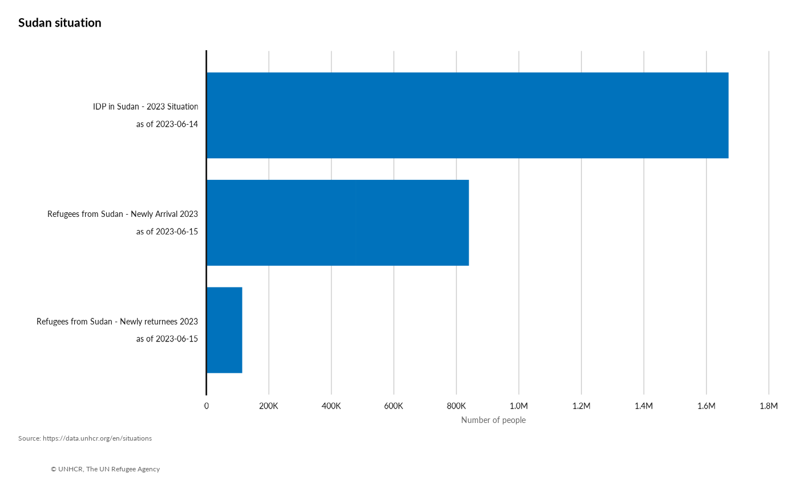

odp.RdThis function pulls key information from the portal
odp(page = NULL, dataset = NULL)aka the name of the situation
one of the following: "population", "population_x_time", "population_x_location", "population_x_origin", "population_x_location2", "demographics", "demographics"
a frame with data
## Use as
## odp(): to retrieve an overview of all available situation pages
data <- odp() |>
dplyr::filter(page_type =="situation" )
DT::datatable(data |> dplyr::select( page_name,page_url),
options = list(scrollX = TRUE))
## to retrieve the datasets for a specific country /situation
datasit <- odp(page = "Sudan situation")
# display results..
DT::datatable(datasit,
options = list(scrollX = TRUE))
## to retrieve a specific dataset on the given page as a parsed JSON
# odp(page, dataset)
page <- "Sudan situation"
dataset <- "population"
datasitpop <- odp(page = page,
dataset = dataset) |>
## extract the data
purrr::map( "data") |>
## Bind together in a data frame
purrr::list_rbind()
## plotting quickly the results...
library(ggplot2)
datasitpop |>
ggplot() +
geom_col(aes(x = as.integer(individuals),
y = reorder( glue::glue("{population_group_name} \n as of {date}"),
as.integer(individuals) )),
fill = unhcrthemes::unhcr_pal(n = 1, "pal_blue"),
width = 0.8) +
labs(title = paste0(page),
x = "Number of people",
y = "",
caption = "Source: https://data.unhcr.org/en/situations \n
© UNHCR, The UN Refugee Agency") +
scale_x_continuous(expand = expansion(c(0, 0.1)),
breaks = scales::pretty_breaks(n = 7),
labels = scales::label_number(scale_cut = scales::cut_short_scale())) +
unhcrthemes::theme_unhcr(
font_size = 12,
grid = "X",
axis = "y")
